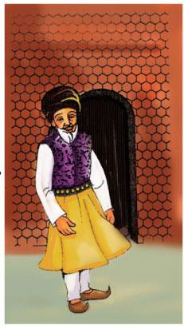

শিক্ষাগুরুর মর্যাদা
কাজী কাদের নওয়াজ
বাদশাহ আলমগীর-
কুমারে তাঁহার পড়াইত এক মৌলবি দিল্লির।
একদা প্রভাতে গিয়া
দেখেন বাদশা-শাহজাদা এক পাত্র হস্তে নিয়ে
ঢালিতেছে বারি গুরুর চরণে
পুলকিত হৃদে আনত-নয়নে,
শিক্ষক শুধু নিজ হাত দিয়া নিজেরি পায়ের ধূলি
ধুয়ে-মুছে সব করিছেন সাফ সঞ্চারি অঙ্গুলি।
শিক্ষক মৌলবি
ভাবিলেন, আজি নিস্তার নাহি, যায় বুঝি তাঁর সবি।
দিল্লিপতির পুত্রের করে
লইয়াছে পানি চরণের পরে,
স্পর্ধার কাজ, হেন অপরাধ কে করেছে-কোন কালে
ভাবিতে ভাবিতে চিন্তার রেখা দেখা দিল তাঁর ভালে।
হঠাৎ কী ভাবি উঠি
কহিলেন, আমি ভয় করি নাক, যায় যাবে শির টুটি,
শিক্ষক আমি শ্রেষ্ঠ সবার
দিল্লির পতি সে তো কোন ছার,
ভয় করি নাক, ধারি নাক ধার, মনে আছে মোর বল,
বাদশাহ শুধালে শাস্ত্রের কথা শুনাব অনর্গল।
৮২যায় যাবে প্রাণ তাহে,
প্রাণের চেয়েও মান বড়, আমি শুনাব শাহানশাহে।
তার পরদিন প্রাতে
বাদশাহর দূত শিক্ষকে ডেকে নিয়ে গেল কেল্লাতে।
খাস কামরাতে যবে
শিক্ষকে ডাকি বাদশাহ কহেন, ‘শুনুন জনাব তবে,
পুত্র আমার আপনার কাছে
সৌজন্য কি কিছু শিখিয়াছে?
বরং শিখেছে বেয়াদবি আর গুরুজনে অবহেলা,
নহিলে সেদিন দেখিলাম যাহা স্বয়ং সকাল বেলা। ’
শিক্ষকে কন- ‘জাঁহাপনা, আমি বুঝিতে পারি নি, হায়,
কী কথা বলিতে আজিকে আমায় ডেকেছেন নিরালায়?’
বাদশাহ কহেন, ‘সে দিন প্রভাতে
দেখিলাম আমি দাঁড়ায়ে তফাতে
নিজ হাতে যবে চরণ আপনি করেন প্রক্ষালন,
পুত্র আমার জল ঢালি শুধু ভিজাইছে ও চরণ।
নিজ হাতখানি আপনার পায়ে বুলাইয়া সযতনে
ধুয়ে দিল নাক কেন সে চরণ, বড় ব্যথা পাই মনে। ’
উচ্ছ্বাস ভরি শিক্ষকে আজি দাঁড়ায়ে সগৌরবে,
কুর্ণিশ করি বাদশাহে তবে কহেন উচ্চরবে-
‘আজ হতে চির উন্নত হলো শিক্ষাগুরুর শির
সত্যই তুমি মহান উদার বাদশাহ আলমগীর। ’

অনুশীলনী
১. কবিতার মূলভাব জেনে নিই।
‘শিক্ষাগুরুর মর্যাদা’ কবিতায় শিক্ষকের কথা বর্ণনা করা হয়েছে। কবিতায় শিক্ষক একজন সাধারণ মানুষ হওয়া সত্ত্বেও বাদশাহ আলমগীরের ছেলের দ্বারা পায়ে পানি ঢেলে নিয়েছিলেন। কিন্তু বাদশাহ আলমগীর এতে সন্তুষ্ট ছিলেন না। বাদশাহ আলমগীর প্রত্যাশা করেছিলেন তাঁর সন্তান পানি ঢেলে নিজ হাতে শিক্ষকের পা ধুয়ে দেবেন। তবেই না তাঁর সন্তান নৈতিকতা, মূল্যবোধ ও দেশপ্রেম নিয়ে দেশের একজন আদর্শ মানুষ হিসেবে গড়ে উঠবে। বাদশাহ আলমগীর উপলব্ধি করেছিলেন, যে ছাত্র তাঁর শিক্ষককে যথাযথ মর্যাদা দিতে জানে না, শিক্ষকের সেবা করতে জানে না, সে কখনো পরিবার, সমাজ ও দেশের উপযোগী মানুষ হিসাবে গড়ে উঠতে পারে না।
শিক্ষাগুরুর মর্যাদা কবিতার মাধ্যমে আমরা উপলব্ধি করতে পারি, শিক্ষা হলো একটি জাতির মেরুদণ্ড, আর শিক্ষক হলেন কান্ডারি। তিল তিল করে নীরবে নিভৃতে শিক্ষক তাঁর আদর্শ দ্বারা জাতীয় আকাঙ্ক্ষার উপযোগী ভবিষ্যৎ প্রজন্ম গড়ে তোলেন। সমাজ ও দেশের জন্য শিক্ষকের অবদান অপরিসীম। তাই সমাজে শিক্ষকের মর্যাদা সবার উপরে।
২. শব্দগুলো পাঠ থেকে খুঁজে বের করি। অর্থ বলি।
|
কুমার |
শাহজাদা |
বারি |
চরণ |
শির |
|
শাহানশাহ |
প্রক্ষালন |
কুর্ণিশ | ||
৩. ঘরের ভিতরের শব্দগুলো খালি জায়গায় বসিয়ে বাক্য তৈরি করি।
|
কুমার |
বারি |
চরণ |
শির |
|
শাহানশাহ |
কুর্নিশ | ||
ক. পিতার [………………………………………………] হাত রেখে পুত্র দোয়া চাইল।
খ. বর্ষাকালে প্রবল [………………………………..] বর্ষণ হয়।
গ. আগের দিনে হাতি-ঘোড়া চড়ে […………………………………………] শিকারে যেতেন।
ঘ. উজির বাদশাহকে [……………………………………..] করলেন।
ঙ. […………………………………………….] আলমগীর ছিলেন একজন মহৎপ্রাণ শাসক।
চ. অন্যায়ের কাছে কখনো […………………………………………………..] নত করব না।
৪. প্রশ্নগুলোর উত্তর মুখে বলি ও লিখি।
ক. বাদশাহ আলমগীরের পুত্রকে কে পড়াতেন?
খ. একদিন সকালে বাদশাহ কী দেখতে পেলেন?
গ. বাদশাহকে দেখে শিক্ষক প্রথমে কী ভাবলেন?
ঘ. ‘প্রাণের চেয়েও মান বড়’-শিক্ষক এ কথা বললেন কেন?
৮৪ঙ. বাদশাহ আলমগীর শিক্ষককে প্রথমে কী বললেন?
চ. শিক্ষক কী বলে বাদশাহর সুনাম করলেন?
৫. নিচের কথাগুলো বুঝে নিই।
শিক্ষকে ডাকি বাদশাহ কহেন, ‘শুনুন জনাব তবে,
পুত্র আমার আপনার কাছে
সৌজন্য কি কিছু শিখিয়াছে?
বরং শিখেছে বেয়াদবি আর গুরুজনে অবহেলা,
নহিলে সেদিন দেখিলাম যাহা স্বয়ং সকাল বেলা। ’
৬.
ক্ষ, স্ব, স্ম, স্ত্র-প্রত্যেকটি যুক্তবর্ণ ব্যবহার করে তিনটি করে শব্দ লিখি। যেমন-
|
ক্ষ = |
ক্ + ষ - ক্ষয়, শিক্ষা, সক্ষম |
|
স্ব = |
স্ + ব - |
|
স্ম = |
স্ + ম - |
|
স্ত্র = |
স্ + ত্ + র - |
৭. বিপরীত শব্দগুলো ঠিকমতো সাজাই।
বড় অপযশ
মান অবনত
যশ বিকাল
বিষাদ অপমান
উন্নত ছোট
সকাল হর্ষ
কবি-পরিচিতি
কবি কাজী কাদের নওয়াজ ১৯০৯ সালের ১৫ই জানুয়ারি পশ্চিমবঙ্গের মুর্শিদাবাদ জেলার তালিবপুর গ্রামে জন্মগ্রহণ করেন। তিনি কলকাতা বিশ্ববিদ্যালয় থেকে ইংরেজি সাহিত্যে অনার্স ও বিটি পাশ করেন। তিনি চাকরি জীবনের প্রথমে ছিলেন সাব ইন্সপেক্টর, পরে বিভিন্ন স্কুলে প্রধান শিক্ষকের দায়িত্ব পালন করেন। তিনি নীতিকথা ও কাহিনিমূলক শিশুতোষ কবিতার জন্য খ্যাতি লাভ করেন। ১৯৮৩ সালের ৩রা জানুয়ারি তিনি মৃত্যুবরণ করেন।
৮৫